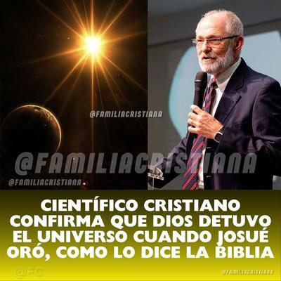

¿Qué les parece? ¿No se merecía este hombre un Premio Nobel por su trascendental descubrimiento en cosmología y astrofísica? La idea se basa en el episodio bíblico en que Josué le ordenó al Sol detenerse sobre Gabaón, y a la luna sobre el valle de Ajalón, para prolongar la luz del día y permitir que el ejército de Israel terminara de derrotar a los amorreos (Josué 10:12-14) … Pero la Biblia se quedó muy corta: ¡No sólo se detuvieron el Sol y la luna, sino el universo entero!


Y sin embargo, nadie dijo nada sobre este descubrimiento científico tan significativo para la humanidad. Ni siquiera se dio a conocer el nombre de este supergenio que superó a mentes como Nicolás Copérnico, Galileo Galilei, Johannes Kepler, Isaac Newton, Edwin Hubble, Albert Einstein o Stephen Hawking.
Tan sólo un modesto sitio web creado para «mantener informada a la comunidad cristiana con noticias relevantes y actuales», se refirió al tema. El título apareció en una publicación realizada recientemente en las redes sociales, el 15 de febrero de 2026, por un medio identificado como «Noticias Proféticas»[1]. Pero lo más curioso es que, a pesar de su trascendencia, no se trataba de una noticia nueva, pues se refiere a un artículo publicado por ellos mismos el 21 de junio de 2024[2], aunque hablan ahora en tiempo presente, como si el descubrimiento se acabara de producir.
¿No es esto extraño? ¿Por qué ningún medio informativo internacional lo dio a conocer? ¿Por qué no se vio nada publicado en revistas especializadas como Nature, Science o National Geographic? ¿Por qué no hubo ningún comunicado de prensa por parte de la comunidad científica?
¿Y quién es ese gran cosmólogo? «Noticias Proféticas» lo identifica como el brasileño Audato Lourenço, de nombre completo Adauto José Boiança Lourenço, y también conocido como J. B. Lourenço, quien, por cierto, habría fallecido el 18 de abril de 2024, a los 66 años, sin pena ni gloria.
¿Y cuál era su formación? Se graduó en Física en la Bob Jones University, Estados Unidos, en 1990, obteniendo un máster en Física en la Clemson University en 1994, defendiendo una tesis titulada «Inelastic Scattering of Helium from Rhodium» (Dispersión inelástica del helio a partir del rodio), lo cual indica un trabajo experimental o teórico bastante específico dentro de física de materiales o interacción gas-superficie. Es decir, ¡nada que ver con astrofísica, ni física teórica, ni mucho menos cosmología! Su trabajo fue concretamente en física de materiales y superficies… Pero además, obtuvo un grado en Teología, dedicando gran parte de su labor pública a conferencias de apologética cristiana y defensa del creacionismo; ya sabes, disonancia cognitiva.
Pero dejemos ya el sarcasmo y encaremos la realidad: citar a este señor para explicar la dinámica del sistema solar —y no digamos, del universo—, equivale a pedirle a un cardiólogo que calcule la trayectoria de una nave interplanetaria. Él pudo haber sido un profesional serio en su campo, pero sobre el universo, su opinión no pesa más que la de cualquier predicador. Por eso es que defendemos aquel dicho popular: «Zapatero a tus zapatos».
Por supuesto, el recurso retórico utilizado por «Noticias Proféticas» es viejo: citar a alguien con título académico —aunque sea con otra especialidad que nada tiene que ver— para colocar a las creencias religiosas una máscara de ciencia. Sin embargo, cuando se analizan los hechos… la narración se desmorona con una rapidez comparable a la de un meteorito entrando en la atmósfera.
A pesar de todo, el artículo de «Noticias Proféticas» presenta a este apasionado creyente como si hubiera resuelto un problema astronómico que miles de especialistas nunca pudieron detectar: la paralización del universo en la Edad de Bronce. Y obviamente eso no es divulgación científica.
Bajo un enfoque científico, el error fundamental es que el texto bíblico es geocéntrico. Por lo que el relato de Josué describe algo perfectamente lógico, pero para el siglo XIII AEC: Si el Sol se mueve por el cielo, el día depende del movimiento del Sol, y si el Sol se detiene, el día se alarga. Sin embargo, obviamente, el redactor bíblico desconoce que existía la rotación terrestre, por lo que describía el mundo tal como se veía: el Sol girando alrededor de la Tierra. Lo cual no es un pecado intelectual —era la cosmología universal de la época. El problema aparece cuando en pleno 2024 o 2026, alguien trata de convertir esa antigua percepción en un evento físico real. Y más aún si lo hace un «científico».
En nuestros tiempos, que llevamos toda información en el bolsillo, hasta un adolescente comprende el error: ¿Qué tendría que pasar realmente para que «el día se detuviera»? —Hoy todos (o casi todos) saben que el día y la noche existen, porque la Tierra gira sobre su propio eje, a una velocidad aproximada de 1.670 km/h en el ecuador. Por lo que, para alargar el día, sólo habría teóricamente dos opciones: Detener la rotación de la Tierra, o alterar su movimiento orbital. Y ambas implican un evento físico de energía casi inimaginable.
Si la Tierra detuviera bruscamente su rotación, esto es lo que ocurriría:
Los océanos continuarían moviéndose, y eso provocaría mega-tsunamis continentales.
La atmósfera seguiría viajando a una velocidad supersónica, y el viento global sería devastador.
Los continentes se fracturarían por los terremotos extremos.
Toda la estructura superficial de la Tierra se barrería.
Se extinguiría de inmediato la vida compleja.
¿Por qué ocurriría esto? Pues, simplemente por la inercia: todo objeto que se mueve a 1670 km/h, continuaría moviéndose a esa velocidad. El planeta se convertiría en una licuadora geológica. Aunque, según «la palabra de Dios», los soldados continuarían peleando normalmente.
Definitivamente, un supuesto milagro de detención de Sol no es ningún milagro. Eso sólo evidencia que el autor no estaba describiendo física real, sino una narración teológica. Es decir, no estaba describiendo la realidad, sino un suceso imaginario.
Ahora bien, el artículo de «Noticias Proféticas» afirma que la supuesta parálisis del universo dependió del «referencial geográfico». Intenta de esta manera usar relatividad para salvar el relato. Sin embargo, en física, un cambio de referencial cambia la descripción matemática, pero no crea un evento físico inexistente. Porque no existe ningún sistema de referencia donde el universo se detenga sin liberar energía detectable. Si eso ocurriera, los satélites naturales se caerían, las órbitas planetarias cambiarían, y los registros geológicos mostrarían catástrofes globales. Y nada de eso ocurrió.
Pero el mayor problema que observamos en artículos cristianos como el referido, es que utilizan irresponsablemente el nombre de la ciencia. Su patrón típico es este:
La religión hace una afirmación extraordinaria.
Se busca un científico creyente.
Se ignora el consenso científico.
Y se anuncia que «La ciencia confirma la Biblia».
Pero, observemos que siempre ocurre algo muy interesante: la religión siempre trata de validad sus creencias apelando a la ciencia, pero nunca verás a la ciencia validando sus teorías apelando a la religión. Nunca verás un artículo académico diciendo: «La validez de la mecánica cuántica acaba de ser confirmada por un profeta iluminado por el Espíritu Santo.» La relación es siempre unilateral. Es decir, la fe necesita a la ciencia para legitimarse, pero la ciencia no necesita a la fe para existir.
Así que, en el caso de Josué derrotando a los amorreos, si queremos pensar que en el fondo ocurrió un hecho real, lo más que podremos aceptar es que la victoria militar ocurrió, pero fue interpretada por el redactor bíblico como una ayuda divina, utilizando para ello el lenguaje cosmológico de su época. Pero obviamente, nada sobrenatural ocurrió: el Sol nunca se detuvo, la Tierra no frenó, y el universo nunca se paralizó. No habría necesidad ni de decirlo.
Por tanto, el sesgado (y aparentemente tendencioso) artículo de «Noticias Proféticas», no expone absolutamente nada de ciencia: no presenta ninguna evidencia astronómica, ni geológica, ni histórica independiente. No puede hacerlo, porque, ante todo, no hay ninguna forma en que se pueda detener la rotación terrestre, ni hay forma de detener todo el universo. Esas son ideas completamente absurdas.
Lo cierto es que cuando la religión trata de apoyarse en la ciencia sin respetar sus métodos, lo que hace no es elevar la fe, sino degradar el conocimiento. Porque la ciencia nunca se valida con «textos sagrados». Y si un relato necesita reinterpretar las leyes del universo para sobrevivir, en realidad no describe el universo… sino sólo la imaginación humana.
[Godless Freeman]
Comentarios
Comments powered by Disqus